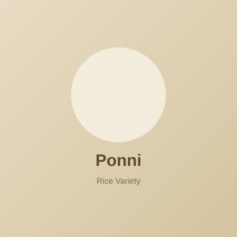
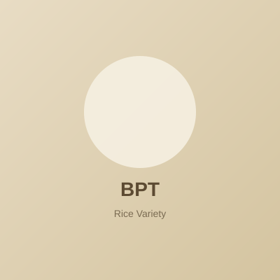
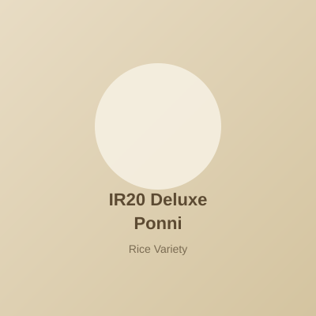
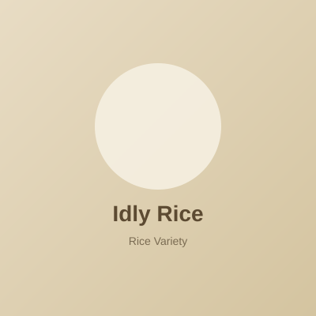

Select from our popular rice varieties

Popular South Indian rice variety. Medium grain, soft and fluffy when cooked, ideal for daily meals and curries.

BPT (Bapatla) rice is a fine, short-grain variety known for its quality and taste in South Indian cooking.

Premium IR20 Deluxe Ponni rice with superior medium grain quality for biryani, pulao, and everyday cooking.

Selected rice for idlis and dosas. Short grain for soft, fluffy idlis with the right fermentation.
Sri Raj Rice Mill
No 12 Othaivadai Street, Near Hotel Highway Inn, Karukuli Madhurandham, Karunguli, Kanchipuram-603303, Tamil Nadu